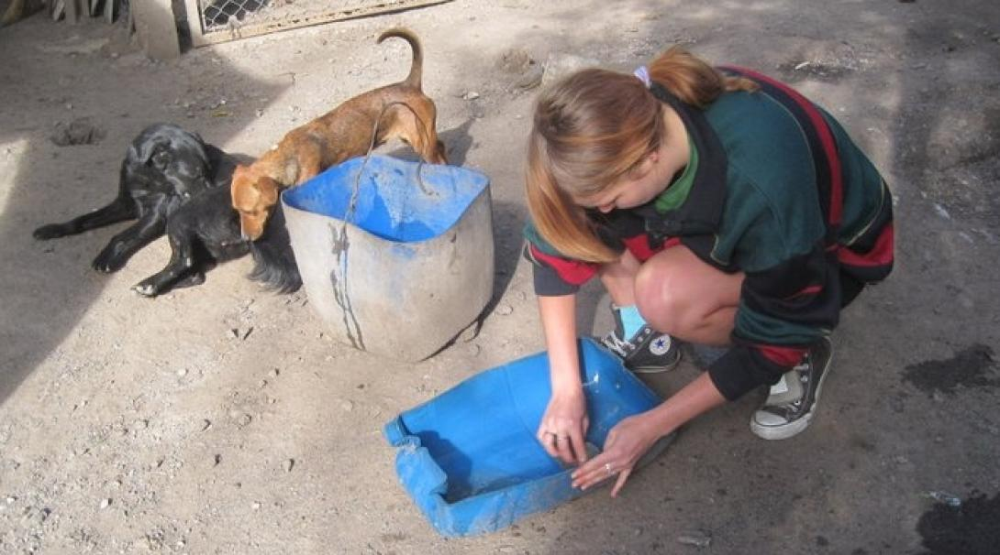
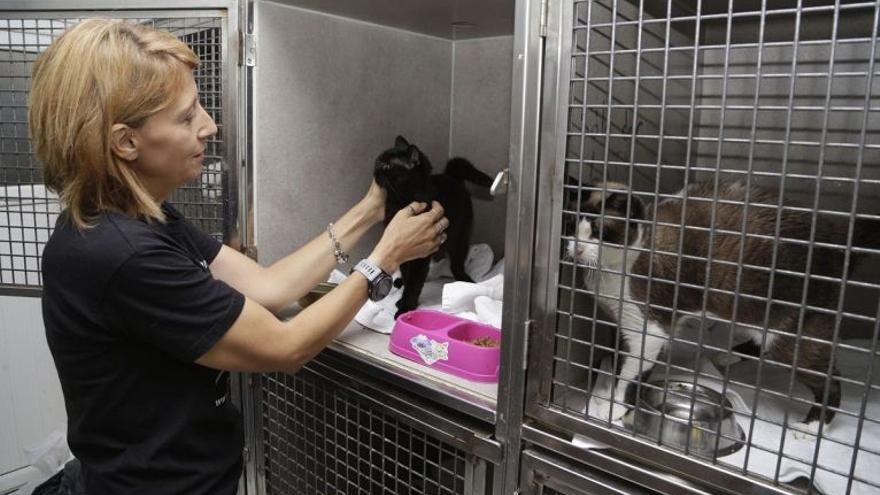
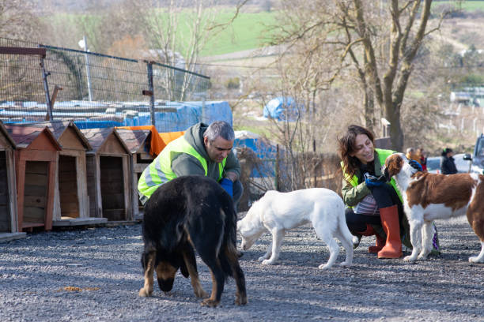
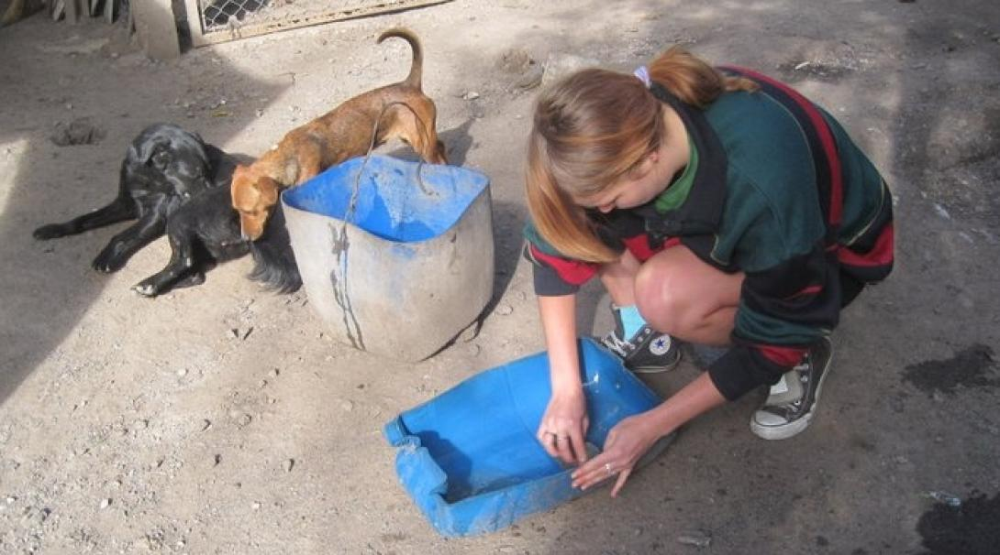
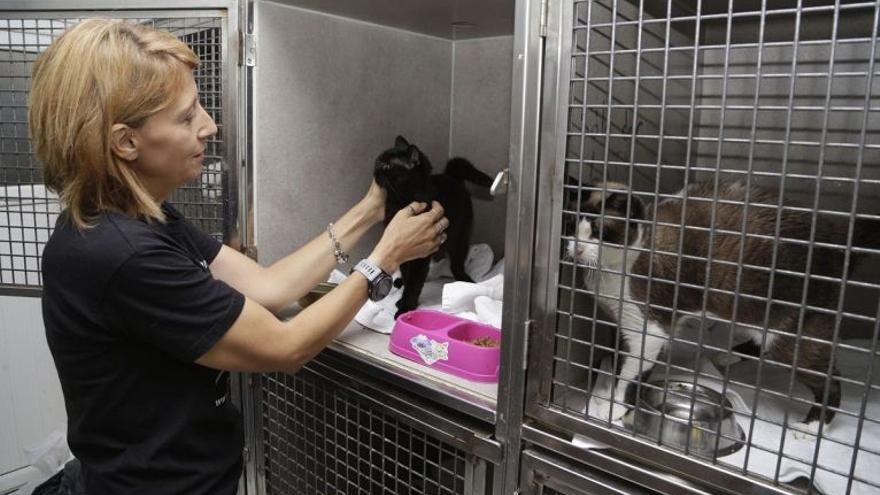
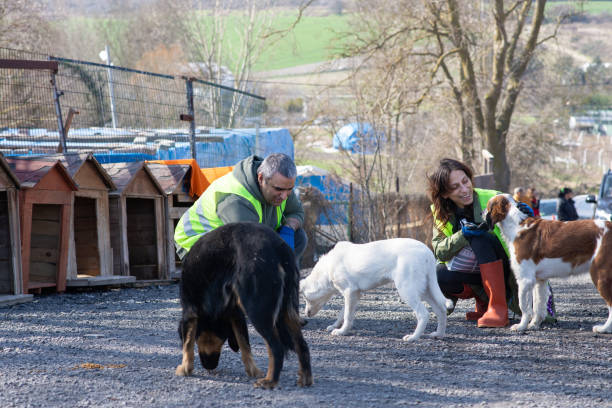

sumate a nuestro equipo.
Según varias definiciones que encontramos en la web Voluntario es "la persona que por elección propia dedica parte de su tiempo a la acción solidaria, altruista, sin recibir remuneración por esto". Para nosotros es algo más, ser voluntario es dar toda nuestra fortaleza, ánimo, la voluntad; pero más que eso, es un estilo de vida.
Llega un día en la vida en la cual nos preguntamos qué podemos hacer por alguien más. A todos los voluntarios nos pasó levantarnos un día y decirnos “hoy comienzo a luchar por los animales, hoy comienzo a luchar por aquellos por los cuales nadie habla, por aquellos olvidados por muchos”. Entonces activamos y nuestra vida cambia por completo: se llena de miradas de agradecimiento, de esperanza por un mundo mejor, de “movidas de rabitos”, de orejas levantadas y de amor incondicional. Ésta es también tu oportunidad de comenzar a vivir ésta experiencia inigualable que es ayudar a los animales, aportar tu gran granito de arena para lograr un futuro sin abandono ni maltrato animal. Como voluntario estarás colaborando en el tiempo que puedas con diferentes actividades: eventos, jornadas de trabajo en el refugio, colectas, rescates y muchísimas cosas más. Ser voluntario del Refugio San Francisco de Asís es pertenecer a un enorme grupo de gente con tus mismos principios, con tus mismos ideales. Si vivís en Buenos Aires, Argentina, y llegó tu momento de activar escribinos ahora que te contamos todo.
 




